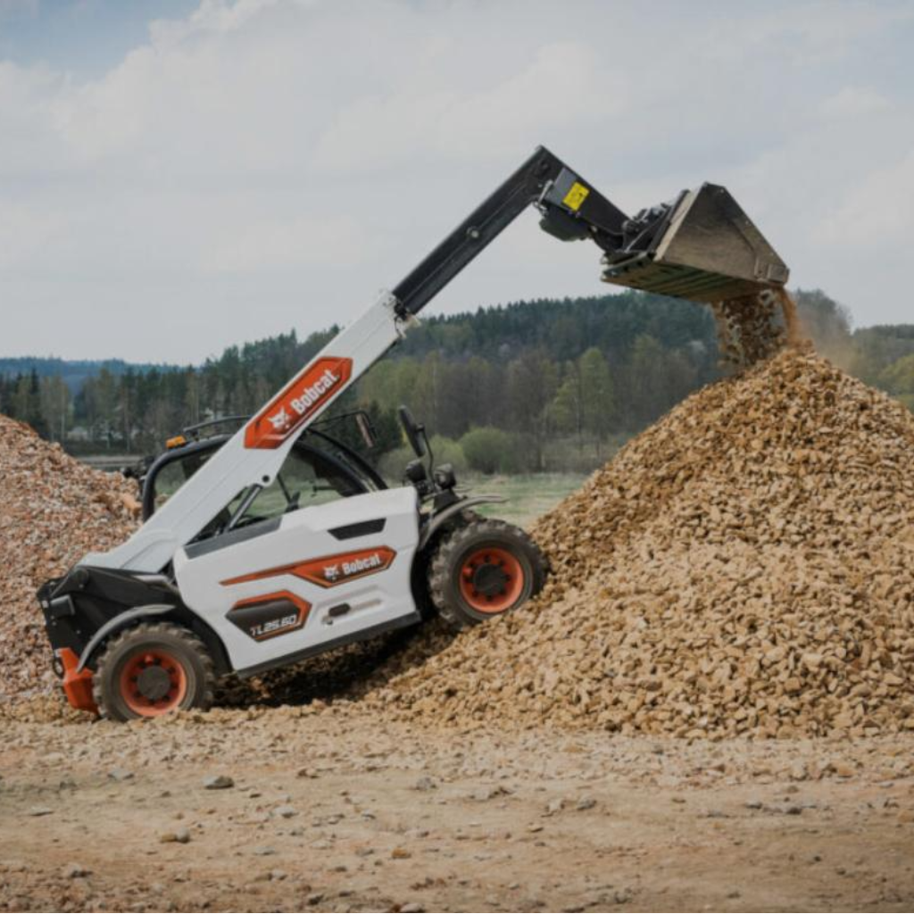
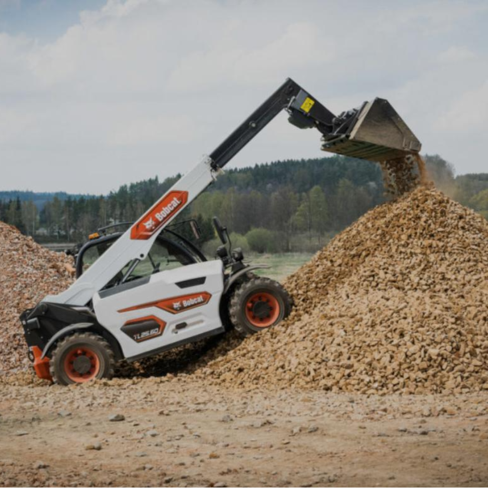

Služby
Nabízíme komplexní stavební služby – výkopy, demolice, spodní stavby, autodopravu i přepravu techniky.

Zemní a výkopové práce
Provádíme výkopy základů větších objektů, rodinných domů i garáží. Zajišťujeme skrývky ornice, výkopy inženýrských sítí a přípravu terénu..
Spodní stavby
Specializujeme se na výstavbu základových desek, pasů, izolací a drenáží. Pevné a kvalitní základy pro vaši stavbu.
Demoliční činnost
Demolujeme stavby, mosty, přístřešky i betonové objekty. Postaráme se o ekologickou likvidaci a odvoz suti.
Autodoprava
Dovážíme stavební materiály, štěrky, písky a sypké hmoty vlastní technikou.

Kontejnerová doprava
Přistavení kontejnerů pro odvoz suti, komunálního i stavebního odpadu. Rychle a flexibilně dle vaší potřeby.

Přeprava techniky
Přepravíme bagry, válce i jinou techniku na podvalníku MAN TGX nebo soupravou MAN 8x4 Bornatic.

Inženýrské sítě
Realizujeme výkopy a pokládku inženýrských sítí včetně přípojek, kanalizace, vody i elektřiny. Precizně, bezpečně a dle projektové dokumentace.

Kanalizace
Provádíme výkopové práce pro kanalizace a pokládku potrubí. Zajistíme napojení na veřejnou síť i odvoz stavebního odpadu.
Ukládání kamenů
Pokládka přírodního kamene a zpevňování břehů i svahů. Vhodné pro terénní úpravy, zahrady nebo vodní toky.


 
